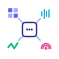

Making multimodal foundation models extendable, reusable, and accessible.
Sponsored by Europe Horizon projects
Building multimodal models remains difficult for research communities working with modalities that do not exist at web scale, such as biomedical signals and speech in rare languages. Moreover, the development of multimodal models often requires large-scale computational resources, which are generally available only to a handful of research organizations worldwide.
Making the development of multimodal models accessible to a broader research community requires addressing problems that are largely hidden when training on abundant data or when using large-scale computational resources. These challenges call for new research questions, a clear-eyed account of where current approaches to building multimodal models fall short, and approaches that enhance efficiency and reduce the friction of incorporating new data modalities.
Multimodality for Everyone (M4E) aims to bring together researchers working on general-purpose multimodal architectures, non-conventional data modalities, efficient domain adaptation, and improving compute-efficient models. We aim to identify the technical barriers that currently prevent multimodal models from being extendible, reusable, and accessible in terms of the required data and compute resources.
Times are offsets from the start of the two-hour session.
| Time | Event |
|---|---|
| 00:00–00:10 | Introduction and scope of the session |
| 00:10–00:40 | Invited Talk — Yuki Asano (University of Technology Nuremberg) Title to be defined |
| 00:40–01:10 | Invited Talk — Desmond Elliot (University of Copenhagen) Title to be defined |
| 01:10–01:55 | Panel session with questions from the audience — Yuki Asano (University of Technology Nuremberg), Desmond Elliot (University of Copenhagen), Stéphane d'Ascoli (Meta AI) |
| 01:55–02:00 | Concluding remarks |
The event is sponsored by two Horizon Europe projects that address key scientific and engineering challenges around multimodal models.
ELLIOT (GA No. 101214398) is a Horizon Europe project that develops large-scale, open multimodal foundation models with strong spatio-temporal understanding. It uses European high-performance computing and combines real and synthetic data to support robust general-purpose AI across diverse modalities.
DVPS (GA No. 101213369) is a Horizon Europe project that advances the science and engineering of multimodal foundation models. It creates methods and tools that work across modalities and application domains, so these models can be developed more efficiently and made more accessible.